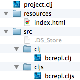
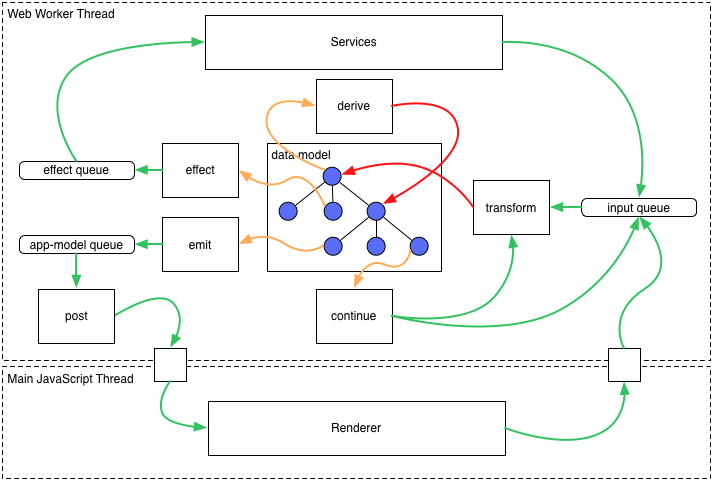

An Introduction to ClojureScript
for Javascript developers
Knowledge
is the difference between choice and choices.
There will be parentheses in this presentation.
Basic Syntax Conversion
12345
"abc"
[1, 2, 3]
[1, 2, 3][0]
{'a': 1, 'b': 2, 'c': 3}
var a = 1;
function(x){ return x; }
function f(x, y){ return x + y; }
(function(){
var b = 2;
return f(a, b);
}());
12345
"abc"
[1 2 3]
([1 2 3] 0)
{"a" 1 "b" 2 "c" 3}
(def a 1)
(fn [x] x)
(defn f [x y] (+ x y))
(let [b 2]
(f a b))
The first function a developer learns.
// Lazy.js
function fizzbuzz(x){
var x3 = x % 3 == 0,
x5 = x % 5 == 0;
if(x3 && x5)
return "fizzbuzz";
if(x3) return "fizz";
if(x5) return "buzz";
return x;
}
Lazy
.generate(function[x]{
return x;
})
.drop(1)
.map(fizzbuzz);
(defn fizzbuzz [x]
(let [x3 (zero? (mod x 3))
x5 (zero? (mod x 5))]
(cond
(and x3 x5) "fizzbuzz"
x3 "fizz"
x5 "buzz"
:else x)))
(map fizzbuzz
(drop 1 (range)))
Single Atom Architecture
Single Atom Architecture
(ns example1.core)
(def state (atom {:color "#ffffff"}))
(defn gen-color []
(let [color (.toString (Math/floor (* (Math/random) 16777216)) 16)]
(str (.slice "#000000" 0 (- (count color))) color)))
(defn handle-click [event]
(swap! state assoc-in [:color] (gen-color)))
(defn handle-state-change [newcolor]
(set! (.. js/document -body -style -backgroundColor) newcolor))
(add-watch state :watch-change1
(fn [_ _ _ newv] (handle-state-change (:color newv))))
(.addEventListener js/document "click" handle-click)
Using Javascript Libraries
Handlebars.js
(def t (->> (.. js/document (getElementById "entry-template") -textContent)
(.compile js/Handlebars)))
(set! (.. js/document (getElementById "target") -innerHTML)
(t #js {:title "Title1" :body "First post!"}))
Path.js
(defn handleUserRoute [] ...)
(defn setPageBackground [] ...)
(.. js/Path (map "#/users") (to handleUserRoute) (enter setPageBackground))
Google Closure Library
(ns example1.core
(:require [goog.dom :as dom]))
(dom/createDom "div" #js {:style "background-color:#EEE;"} "text content")
Building
ClojureScript Compiler
Google Closure Compiler
ClojureScript Compiler Usage
Code API
(cljs.compiler/emit ast)
(cljs.analyzer/analyze user-env form)
(cljs.closure/optimize options form-string)
(defn read1 [s] ...)
(->> (read1 "(let [x (cond true (+ 1 2) :else (+ 3 4))] x)")
(cljs.analyzer/analyze user-env)
(#(with-out-str (cljs.compiler/emit %)))
(cljs.closure/optimize {:optimizations :simple}))Command Line Tools
CLOJURESCRIPT_HOME="/Users/user1/cljs_src"
$ cljsc test.cljs > out.js
$ cljsc src {:optimiztions :advanced} > out.jslein-cljsbuild
project.clj
(defproject example1 "0.1.0-SNAPSHOT"
:dependencies [[org.clojure/clojure "1.5.1"]
[org.clojure/clojurescript "0.0-2173"]]
:plugins [[lein-cljsbuild "1.0.2"]]
:source-paths ["src"]
:cljsbuild {
:builds [{:source-paths ["src"]
:compiler { :output-to "main.js"
:output-dir "out"
:optimizations :none
:source-map true}}]})Usage
$ lein cljsbuild once
$ lein cljsbuild auto
$ lein cljsbuild clean
Leiningen Templates
mies

cljs-austin
pedestal-app
Usage
$ lein new mies example1
$ lein new cljs-austin example2
$ lein new pedestal-app example3Editors
Testing & Debugging
lein-cljsbuild Test Runner
(defproject example1 "0.1.0-SNAPSHOT"
:dependencies [[org.clojure/clojure "1.5.1"]
[org.clojure/clojurescript "0.0-2138"]]
:plugins [[lein-cljsbuild "1.0.2"]]
:source-paths ["src"]
:cljsbuild {
:builds [{:source-paths ["src" "test"]
:compiler {
:output-to "main.js"
:output-dir "out"
:optimizations :whitespace
:pretty-print true
:source-map "main.js.map"}}]
:test-commands {"my-test" ["phantomjs" "resources/test/test.js"]}})
$ lein cljsbuild test
$ lein cljsbuild test my-test
ClojureScript.Test
[com.cemerick/clojurescript.test "0.3.0"]Example Tests
(ns lego-gears.ratios-test
(:require-macros [cemerick.cljs.test :refer [is deftest]])
(:require [cemerick.cljs.test :as t]
[lego-gears.ratios :as r]))
(deftest addition-tests
(is (r/= (r/->ratio 3 2)
(r/+ (r/->ratio 1 2) 1)))
(is (r/= (r/->ratio 1 2)
(r/+ (r/->ratio -1 2) 1))))
(deftest subtraction-tests
(is (r/= (r/->ratio 1 2)
(r/- 1 (r/->ratio 1 2)))))
Speclj
[speclj "3.0.2"]Example Tests
(ns change-counter.core-spec
(:require-macros [specljs.core :refer [describe it should=]])
(:require [specljs.core]
[change-counter.core :as core]))
(describe "change-counter.core"
(it "tests a simple function")
(should= true (equals5? 5)))
Double-Check
[com.cemerick/double-check "0.5.7-SNAPSHOT"]Example Tests
(ns double-check.demos
(:require [cemerick.double-check.core :as sc]
[cemerick.double-check.generators :as gen]
[cemerick.double-check.properties :as prop]))
(def sort-idempotent-prop
(prop/for-all [v (gen/vector gen/int)]
(= (sort v) (sort (sort v)))))
(tc/quick-check 100 sort-idempotent-prop)
;; => {:result true, :num-tests 100, :seed 1382488326530}
REPL
ClojureScript Command Line REPL
$ lein trampoline cljsbuild repl-rhinoClojureScript Browser REPL (bREPL)
(ns example1.core
(:require [clojure.browser.repl :as repl]))
(repl/connect "http://localhost:9000/repl")
$ lein trampoline cljsbuild repl-listenAustin and Piggieback(nREPL)
Warning: Use a Clojurescript version greater than 0.0-2173.
Stack Traces
Compiler (Syntax Error)
Runtime (Exception)
Source Maps
Before
After
Compiled with {:optimizations :advanced}
Integrating
this
External Javascript
var SuperMath = {
a: 2,
calculate: function() {
return this.a + this.a;
}
};
SuperMath.calculate(); // => 4
ClojureScript
(SuperMath/calculate)
((aget js/SuperMath "calculate"))
(.calculate SuperMath))
(.calculate js/SuperMath)
(. js/SuperMath (calculate))
Generated Javascript
SuperMath.calculate.call(null);
(SuperMath["calculate"]).call(null);
example1.core.SuperMath.calculate();
SuperMath.calculate();
SuperMath.calculate();
^:export metadata
ClojureScript
(ns example1.core)
(defn fn1 [x]
(inc x))
(defn ^:export fn2 [x]
(inc x))
Javascript
// :optimization :none, :whitespace, or :simple
example1.core.fn1(10); // => 11
example1.core.fn2(10); // => 11
// :optimization :advanced
example1.core.fn1(10); // TypeError:
// Object #<Object>
// has no method 'fn1'
example1.core.fn2(10); // => 11
NodeJS
project.clj
(defproject example1 "0.1.0-SNAPSHOT"
...
:cljsbuild {
:builds [{
:source-paths ["src"]
:compiler {:target :nodejs
:output-to "main.js"
:output-dir "out"
:optimizations :simple
:source-map "main.js.map"}}]}):target :nodejs
server.cljs
(ns example1.core
(:require [cljs.nodejs :as node]))
(def http (node/require "http"))
(def env (.env node/process))
(defn -main [& args]
(println "hello world"))
(set! *main-cli-fn* -main)
module1.cljs
(ns module1.core)
(aset js/exports "core" module1.core)
Extending Javascript Objects
Extend-Type
(extend-type js/RegExp
IFn
(-invoke
([this s] (re-matches this s))))
(#"\d{3}-\d{4}" "555-5555")
(filter #"\d{3}-\d{4}"
["7875433" "555-5555" "asdf"])
Extend-Protocol
(extend-protocol IFn
js/RegExp
(-invoke ([this s]
(re-matches this s)))
js/Date
(-invoke ([this s] s)))
(#"\d{2}" "stuff")
((js/Date.) "stuff")
Macros
(defmacro string? [x]
(bool-expr
(core/list 'js* "typeof ~{} === 'string'" x)))
Different Namespaces
(ns example1.core
(:require [dommy.core :as d])
(:require-macros [dommy.macros :as m]))
Same Namespace
(ns example1.core
(:require [om.core :as o :include-macros true]))
js*
ClojureScript
(js* "1 + 2")
(+ 2 (js* "1 + 2"))
(js* 5)
(let [x "foo"]
(js* (str "Math." x "()")))
Generated Javascript
1 + 2;
(2 + 1 + 2);
// Compiler Exception: Invalid js* form
// Compiler Exception: Invalid js* form
//
Building Bigger
Extensible Data Notation (EDN)
{:id 12345
:subject "Something Interesting"
"message" ["Sup?" "Yo"]
:sent #inst "2014-04-12T23:20:50.52Z"
:gid #uuid "f51d2fa6-7dec-11d0-a765-10a1c93e6bf6"
:ip #myns/ipaddress "192.168.0.1"
:from #myns/Employee {:id 1}
:to #{"guy1@superemail.com"
#myns/Employee {:id 233}}}
React.js
Om, Reagent, & Quiescent
(ns example1
(:require [om.core :as om :include-macros true]
[om.dom :as dom :include-macros true]))
(defn widget [data owner]
(reify
om/IRender
(render [this]
(dom/h1 nil (:text data)))))
(om/root widget {:text "Hello world!"}
{:target (. js/document (getElementById "my-app"))})
Core.Match
FizzBuzz
(ns foo.bar
(:require-macros [cljs.core.match.macros :refer [match]])
(:require [cljs.core.match]))
(doseq [n (range 1 101)]
(println
(match [(mod n 3) (mod n 5)]
[0 0] "FizzBuzz"
[0 _] "Fizz"
[_ 0] "Buzz"
:else n)))Core.Logic
Sudoku Solver (Excerpt)
(defn sudokufd [hints]
(let [vars (repeatedly 81 lvar)
rows (->> vars (partition 9) (map vec) (into []))
cols (apply map vector rows)
sqs (for [x (range 0 9 3)
y (range 0 9 3)]
(get-square rows x y))]
(run 1 [q]
(== q vars)
(everyg #(fd/in % (fd/domain 1 2 3 4 5 6 7 8 9)) vars)
(init vars hints)
(everyg fd/distinct rows)
(everyg fd/distinct cols)
(everyg fd/distinct sqs))))Core.Async
Alice
(defn alice [c]
(go (while true
(<! c)
(>! c "Hello"))))Bob
(defn bob [c]
(go (while true
(<! c)
(>! c "Hello"))))Start the Conversation
(let [c (chan)]
(alice c)
(bob c)
(go (>! c "Hello")))
Behavior Object System (Light Table)
Object
(object* ::editor
:tags #{:editor :editor.inline-result :editor.keys.normal}
:init (fn [obj info]
(let [ed (make info)]
(object/merge! obj {:ed ed
:doc (:doc info)
:info (dissoc info :content :doc)})
(wrap-object-events ed obj)
(->elem ed))))
Behavior
(behavior ::hide-fold-gutter
:triggers #{:object.instant :lt.object/tags-removed}
:desc "Editor: Hide fold gutter"
:exclusive [::fold-gutter]
:type :user
:reaction (fn [this]
(set-options this {:foldGutter false})))
Message Passing (Pedestal Applications v0.2)
Source: Pedestal Tutorial
Message Passing (Pedestal Applications v0.2)
Single Atom Architecture
Message Passing (Pedestal Applications v0.2)

Event Messages
Message Passing (Pedestal Applications v0.2)
Transformation Messages
Message Passing (Pedestal Applications v0.2)
Coordinated DOM Manipulation
Message Passing (Pedestal Applications v0.2)
Removed State Atom
Message Passing (Pedestal Applications v0.2)
Built-in Communication Channel
Message Passing (Pedestal Applications v0.2)
Source: Pedestal Tutorial
Propagating Values (Hoplon Client)
Data Model
Hoplon Sexp Markup Syntax
(page "index.html")
(defc clicks 0)
(defc= clicks2 (* clicks 2))
(html
(head
(title "example page"))
(body
(p (text "Clicks: ~{clicks} (~{clicks2})"))
(button :on-click #(swap! clicks inc) "click me")))
Resources
Online
- Clojure Cheat Sheet
- StackOverflow
- ClojureDocs
- Clojure Doc
- Differences from Clojure
- #clojure and #clojurescript IRC Channels
- Clojure and ClojureScript Google Groups
- Clojure Youtube Channel